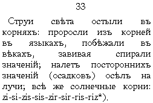
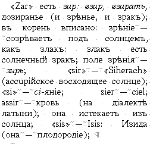
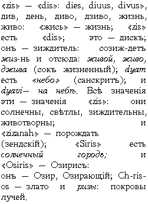
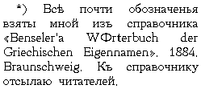

Glossolalia (Section 33)
GLOSSOLALIA

Streams of light cooled off at their roots; they grew from the roots into tongues, they ran throughout the centuries, whirling spirals of significations: the flight of foreign significances (sediments) settled down on the rays; all are solar roots: zi-si-zis-sis-zir-sir-ris-riz.*

"Zar" is zir; a gaze [vzir], to gaze [vzirat'], gazing at [doziran'e] (and vision [zrenie], and a gazer [zrak]); inscribed in the root itself is: vision [zrenie] -- it ripens [sozrevaet] under the sun, like a grain of grass [zlak]; the field of vision is -- in Russian zir'; "sir" is -- "Shiraz" (the Assyrian rising sun); "si" is -- shining [si-yanie]; sier -- ciel; assir is -- blood (in a dialect of Latin); it flows out from the sun; "sis" is -- Isis: Izida in Russian (she is -- fertility);

"zis" -- "dis": dies, diuus, divus, div, day [den'], divine-wonder [divo], dzivo, life, alive: "zhis'" -- life; "zis" is "dis"; this is -- the disk; it is -- the Creator/Designer [zizhditel']: it creates/designs life [sozizh-det' zhi-zn'] and from here: alive [zhivoj], lively [lively], dzhiva (the life-giving juice); dyam is "sky" (Sanskrit), and dyavi -- in the sky. All these significations are -- meanings of "zis": they are sunny, bright, lifegiving, lifecreating; and "zizanah" is -- to give birth (Zendic); "Siris" is the sun city; and "Osiris" is -- Oziris: he is -- Ozir, the One-Who-Gazes -Around [Ozirayushchij]; Ch-rys-os is -- golden and rizas: the covers for the rays.

*I have taken almost all of these meanings from the reference work,Benseler, Woerterbuch der Griechischen Eigennamen, Braunschweig, 1884. I refer the reader to that reference work.